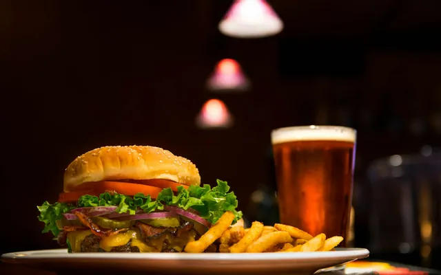
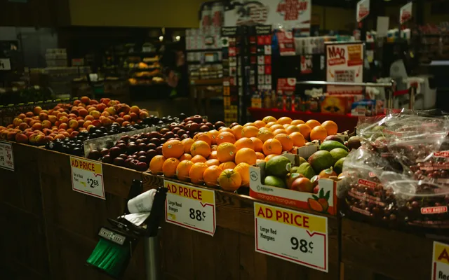
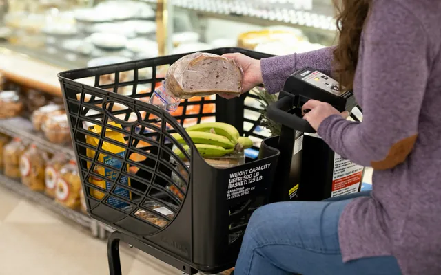

Three promotions ran side by side. Can the data name a winner, or only a loser?
ANOVA · Tukey HSD · 137 stores

Good evening
I work with promotion comparison, observational, and customer transaction data, using statistical analysis and machine learning to evaluate patterns and support business decisions. Each one reports its estimates together with their limitations.
Selected work
Each case study starts from a question about the data and uses the method that suits it: a direct group comparison for the promotion study, propensity-score matching for the observational Seoul data, descriptive and predictive analysis for revenue concentration, and fixed-effects panel models for campaign response.
Three promotions ran side by side. Can the data name a winner, or only a loser?
ANOVA · Tukey HSD · 137 stores

If support follows a net-decline ranking, does it rank risk, or size?
Propensity-score matching · Gradient boosting · 67,475 cells
Is revenue growth coming from the heavy spenders everyone watches?
Lorenz/Gini · Bootstrap CI · Logistic vs RF · 2,500 households

Campaigns look far more effective on low spenders. Is that the campaign, or who receives it?
Two-way FE · Lead-effect test · BH-FDR · 172,500 household-weeks

About
My analysis is mostly in Python, on retail sales, store-level and public commercial-district data. The studies here use group comparisons (ANOVA, Tukey HSD), propensity-score matching, fixed-effects panel regression, bootstrap confidence intervals, and logistic regression, random forest and gradient boosting models. The method follows the structure of the data and the question being asked, for example matching where groups differ in size and household fixed effects where the same households are observed week after week.
I report estimates with confidence intervals or tests, and I describe observational results as adjusted associations rather than causal effects. Where the data cannot separate two explanations, I keep both and state what additional data would settle it.
Each case study has its own limitations section covering what the design cannot identify and which data or analysis would address it. Revenue Concentration and Seoul Closure Risk were team projects; each page states which part is mine. Campaign Response Heterogeneity grew out of a team project on the same dataset; its Scope note explains the details.
Methods
Tools
Reporting
Contact
Open to data analyst and data scientist roles. The code for each study is on GitHub.